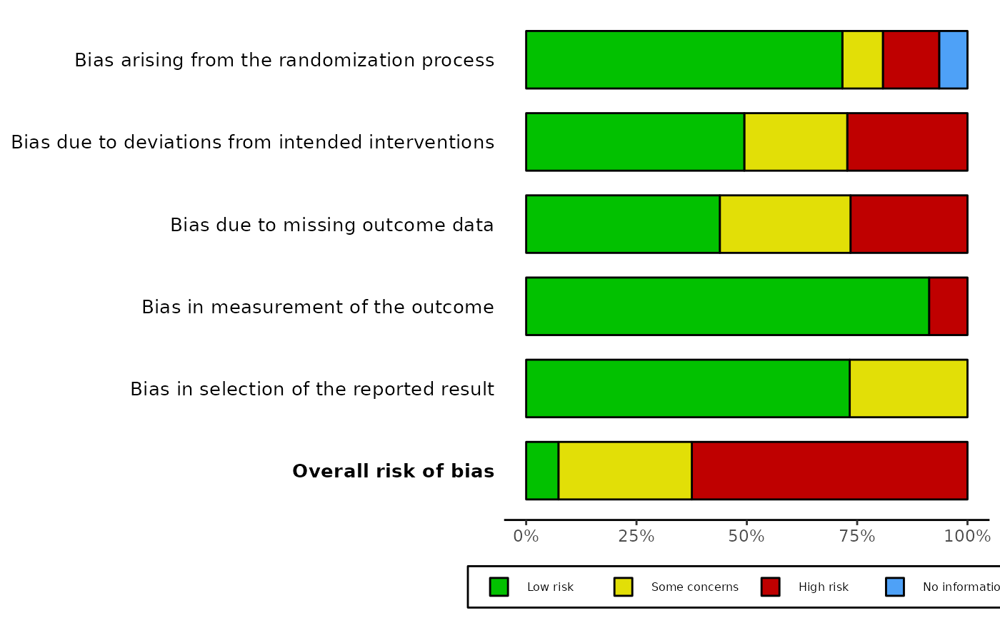

R/rob_tools.R
rob_append_weights.RdUsed to prepare a risk-of-bias dataset to be passed to the weighted barplot function: rob_summary(..., weighted = TRUE)
rob_append_weights(data, res)Risk of bias dataset (without a weight column)
metafor results object
# \donttest{
dat.bcg <- metadat::dat.bcg[c(1:9),]
dat <-
metafor::escalc(
measure = "RR",
ai = tpos,
bi = tneg,
ci = cpos,
di = cneg,
data = dat.bcg,
slab = paste(author, year)
)
res <- metafor::rma(yi, vi, data = dat)
data_rob2$Study <- paste(dat$author,dat$year)
rob_weighted_data <- rob_append_weights(data_rob2[,1:7], res)
rob_summary(rob_weighted_data, tool = "ROB2", weighted = TRUE)

# }